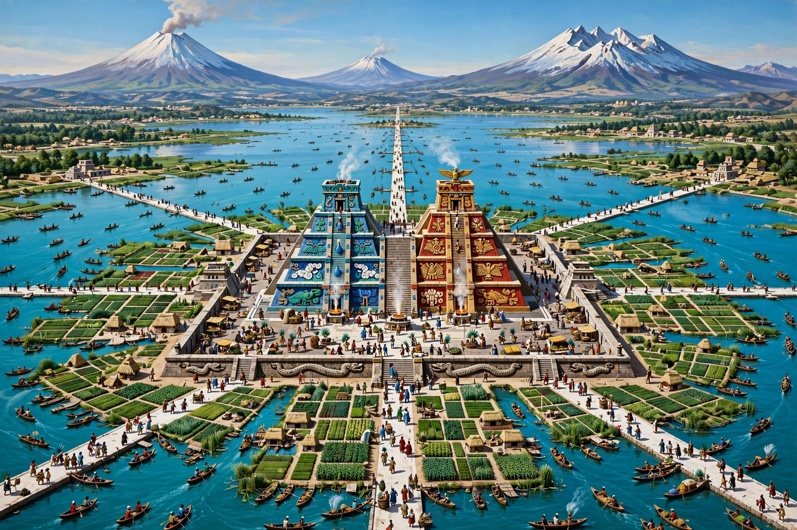

Montezuma II

Portrait of Montezuma II from the Codex Mendoza tradition
Montezuma II (c. 1466 – 29 June 1520), also spelled Moctezuma II (Nahuatl: Motecuhzoma Xocoyotzin), was the ninth tlatoani (ruler) of Tenochtitlan and the Aztec Empire, reigning from 1502 until his death during the Spanish invasion of 1519–1520. A priest-warrior of severe piety, he expanded the empire to its greatest extent and centralised its court, then faced the arrival of Hernán Cortés — an event trailing omens in later accounts — received the Spaniards into his capital, was seized by them in his own palace, and died months later in disputed circumstances (stoned by his own people, by Mexica accounts; murdered by the Spaniards, by others) as Tenochtitlan rose in revolt.
The empire at its height
Montezuma inherited and extended the Triple Alliance's dominion from the Gulf to the Pacific, campaigning against Tlaxcala (kept unconquered as a 'flowery war' training ground and source of captives — a fateful survival) and centralising tribute and ritual. His court at Tenochtitlan — zoos, gardens, aviaries, thousands of attendants — awed the conquistadors, whose letters describe a city larger than Seville. His reforms tightened sumptuary law and court protocol, and his name ('he who frowns like a lord') suited the grave image of the sources.
The Spanish arrival and death
Reports of the strangers reached Montezuma from 1517 (Grijalva's expedition) and, in 1519, Cortés' landing coincided with the year One Reed in the 52-year cycle — the year associated with Quetzalcoatl's return in post-conquest tradition (the story that Montezuma took Cortés for the returning god is now widely doubted by scholars). After the Cholula massacre and the march over the passes, Montezuma received Cortés in Tenochtitlan on 8 November 1519; a week later the Spaniards seized him in his palace, ruling through him for months until Alvarado's massacre of Mexica nobles at the Toxcatl festival (May 1520) ignited the city. Montezuma, brought out to calm the crowds, was struck — by stones, his own people said; the Spanish versions say he died of the wounds days later, others that he was killed by his captors. The uprising drove the Spanish out in La Noche Triste (30 June 1520).